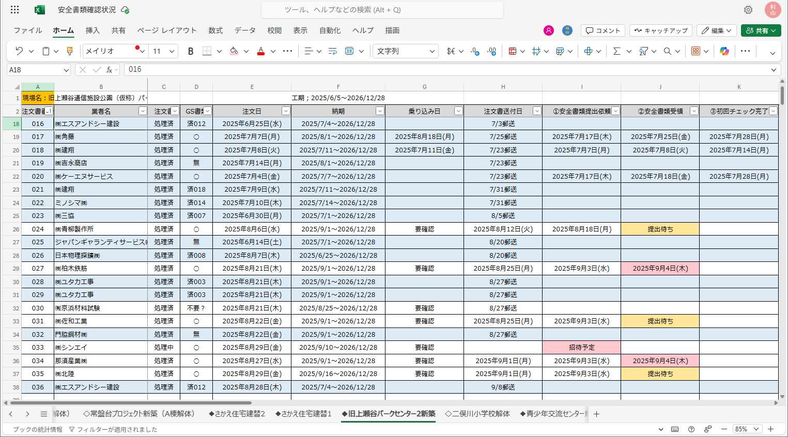

安全書類提出依頼までの全体の流れ
① 契約開始(現場所長) 積算購買部へ見積書を提出し、業者との契約手続きを開始してください。
② 業者追加(積算購買部) 管理表「安全書類確認状況」へ業者が追加されます。契約日程に注意。
③ 注文書送付(経理課) 注文書が業者と現場所長へ送付されます。⇐ 契約完了扱いとなります。
④ 提出依頼(建築事務) 下記【建築事務の担当フロー】に沿った対応に移ります。
【建築事務の担当フロー】
① 管理表「安全書類確認状況」へ業者名が追加されたことと、契約日程を確認
② 小俣組と業者の契約完了次第、グリーンサイトにて企業招待＋提出依頼メールを送付
③ 提出された安全書類を受領、初回チェック、不備があれば修正依頼メールを送付
【お願い】
未契約業者には、安全書類の提出依頼はできません。
※未契約業者＝注文書送付完了していない業者
詳細は「お願いしたいこと」の該当項目をご確認ください。
安全書類の提出期限と依頼状況の確認方法
安全書類の提出期限は、基本的に「現場入場の1ヵ月前まで」と伝えています。
最新の提出依頼状況は管理表「安全書類確認状況」をご確認ください。
安全書類の提出期限は、基本的に「現場入場の1ヵ月前まで」と伝えています。
最新の提出依頼状況は管理表「安全書類確認状況」をご確認ください。

安全書類の提出催促
直接業者へお声かけいただくか、建築事務へお知らせください。
管理表の場所
Teams上部タブまたは
こちらからアクセスできます。